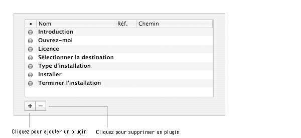

Ce document décrit comment ajouter des étapes ou des panneaux durant le processus d'installation de votre projet à l'aide des plugins Installer.
Veuillez noter que seul les plugins du composant racine du projet seront visibles durant l'installation.
À propos des plugins Installer
Les plugins Installer sont des bundles Cocoa situés dans le dossier Contents/Plugins du package ou metapackage.
Ils sont chargés par le Programme d'installation lorsque votre package ou metapackage est en cours d'installation. Un plugin Installer sera inséré comme une nouvelle étape du processesus d'installation. Cette nouvelle étape peut se dérouler en un ou plusieurs panneaux.
Les plugins Installer sont uniquement supportés par le Programme d'installation de Mac OS X 10.4 et ultérieur. Ces plugins ne seront pas utilisés par des versions antérieures de l'OS ou si vous installez un package avec Apple Remote Desktop ou l'outil en ligne de commande. Ainsi, si par exemple, vous souhaitez ajouter une étape de sérialisation à un package, vous devez toujours avoir du code dans le logiciel installé pour pouvoir permettre à l'utilisateur de saisir son numéro de série.
|
Vous pouvez créer des plugins Installer avec XCode et Interface Builder. Vous devez avoir des connaissances sur Objective-C et les APIs Cocoa.
|
| 1 | Ouvrez XCode. |
| 2 | Choisissez File > New Project… |
| 3 | Sélectionnez le modèle de projet Apple Standard Plug-ins > Installer Plugin. |
| 4 | Cliquer Next. |
| 5 | Saisissez le nom du projet dans le champ texte Project Name. |
| 6 | Codez votre plugin. |
| 7 | Construisez le. |
Icebegr vous permet de rapidement ajouter, supprimer ou changer l'ordre d'affichage d'un plugin Installer dans votre projet.

Pour ajouter un plugin Installer :
| 1 | Sélectionnez le composant dans la colonne Packages et metapackages. | ||
| 2 | Choisissez Vue > Plugins. | ||
| 3 | Cliquez le bouton +. | ||
| 4 | Sélectionnez le(s) plugin(s) que vous souhaitez ajouter et cliquez Ajouter.
|
Pour supprimer un plugin Installer :
| 1 | Sélectionnez le composant dans la colonne Packages et metapackages. |
| 2 | Choisissez Vue > Plugins. |
| 3 | Sélectionnez le(s) plugin(s) à supprimer. |
| 4 | Cliquez le bouton -. |
| 5 | Cliquez Supprimer. |
Pour activer ou désactiver un plugin Installer :
| 1 | Sélectionnez le composant dans la colonne Packages et metapackages. |
| 2 | Choisissez Vue > Plugins. |
| 3 | Sélectionnez le plugin. |
| 4 | Cochez ou décochez la boîte à cocher dans la colonne Adhésion (•). |
Pour modifier l'ordre d'affichage d'un plugin Installer :
| 1 | Sélectionnez le composant dans la colonne Packages et metapackages. |
| 2 | Choisissez Vue > Plugins. |
| 3 | Sélectionnez le plugin. |
| 4 | Glissez-déposez le plugin à sa nouvelle position. |